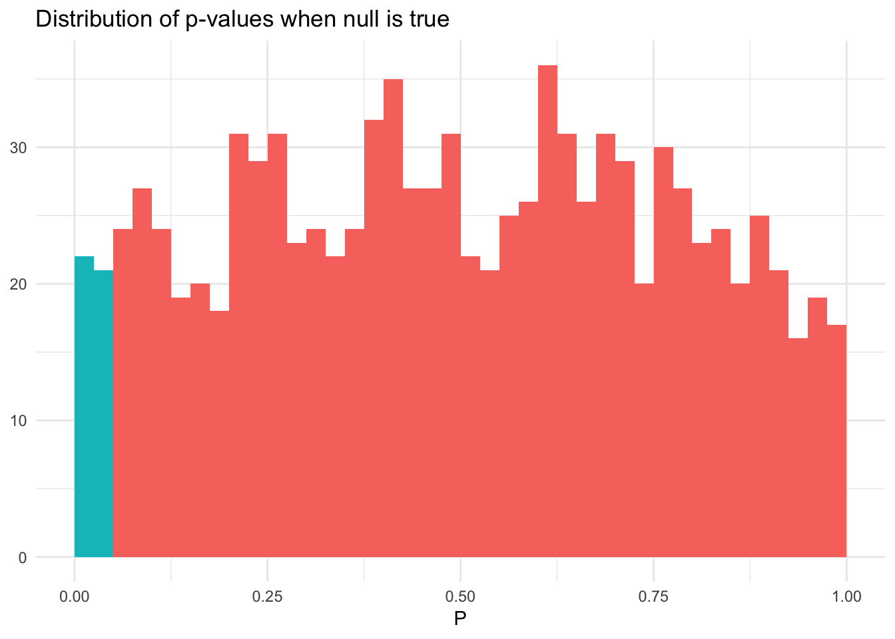

Hypothesis testing
library(tidyverse)
library(broom)
library(patchwork)
options(digits = 3)
set.seed(1234)
theme_set(theme_minimal())\[\newcommand{\E}{\mathrm{E}} \newcommand{\Var}{\mathrm{Var}} \newcommand{\Cov}{\mathrm{Cov}} \newcommand{\se}{\text{se}} \newcommand{\Lagr}{\mathcal{L}} \newcommand{\lagr}{\mathcal{l}}\]
Hypothesis testing
In hypothesis testing, we start with some default theory – called a null hypothesis – and we ask if the data provide sufficient evidence to reject the theory. If not, we fail to reject the null hypothesis.
Formally, suppose we partition the parameter space \(\Theta\) into two disjoint sets \(\Theta_0\) and \(\Theta_1\) and that we wish to test
\[H_0: \theta \in \Theta_0 \quad \text{versus} \quad H_1: \theta \in \Theta_1\]
- \(H_0\) - null hypothesis
- \(H_1\) - alternative hypothesis
Let \(X\) be a random variable and let \(\chi\) be the range of \(X\). We test a hypothesis by finding an appropriate subset of outcomes \(R \subset \chi\) called the rejection region. If \(X \subset R\) we reject the null hypothesis, otherwise we do not reject the null hypothesis. Usually the rejection region \(R\) is of the form
\[R = \left\{ x: T(x) > c \right\}\]
where \(T\) is a test statistic and \(c\) is a critical value. Hypothesis testing requires us to find an appropriate test statistic \(T\) and an appropriate critical value \(c\) to test a given hypothesis. Different hypotheses require different test statistics.
Types of errors

Hypothesis testing is not error-proof. We start from the assumption that \(H_0\) is true unless there is strong evidence to reject \(H_0\). Rejecting \(H_0\) when \(H_0\) is true is a type I error (false positive), while retaining \(H_0\) when \(H_1\) is true is called a type II error (false negative).
Power function
The power function of a test with rejection region \(R\) is defined by
\[\beta(\theta) = \Pr_\theta (X \in R)\]
The size of a test is defined to be
\[\alpha = \text{sup}_{\theta \in \Theta_0} \beta(\theta)\]
- \(\text{sup}\) - supremum, or the largest value that \(\beta(\theta)\) could take on in the given \(\theta \in \Theta_0\)
A test is said to have level \(\alpha\) if its size is less than or equal to \(\alpha\).
Sided tests
A test of the form
\[H_0: \theta = \theta_0 \quad \text{versus} \quad H_1: \theta \neq \theta_0\]
is called a two-sided test, or a simple hypothesis. A test of the form
\[H_0: \theta \leq \theta_0 \quad \text{versus} \quad H_1: \theta > \theta_0\]
or
\[H_0: \theta \geq \theta_0 \quad \text{versus} \quad H_1: \theta < \theta_0\]
is called a one-sided test, or a composite hypothesis.
Example hypothesis test
Let \(X_1, \ldots, X_n \sim N(\mu, \sigma^2)\) where \(\sigma\) is known. We want to test \(H_0: \mu \leq 0\) versus \(H_1: \mu > 0\). Hence, \(\Theta_0 = (-\infty, 0]\) and \(\Theta_1 = (0, \infty]\). Consider the test
\[\text{reject } H_0 \text{ if } T>c\]
where \(T = \bar{X}\). The rejection region is
\[R = \left\{(x_1, \ldots, x_n): T(x_1, \ldots, x_n) > c \right\}\]
Let \(Z\) denote the standard Normal random variable. The power function is
\[ \begin{align} \beta(\mu) &= \Pr_\mu (\bar{X} > c) \\ &= \Pr_\mu \left(\frac{\sqrt{n} (\bar{X} - \mu)}{\sigma} > \frac{\sqrt{n} (c - \mu)}{\sigma} \right) \\ &= \Pr_\mu \left(Z > \frac{\sqrt{n} (c - \mu)}{\sigma} \right) \\ &= 1 - \Phi \left( \frac{\sqrt{n} (c - \mu)}{\sigma} \right) \end{align} \]
This function is increasing in \(\mu\):
data_frame(x = seq(-3, 3, by = 0.01),
y = pnorm(x),
h = x > -0) %>%
ggplot(aes(x, y, color = h)) +
geom_line(size = 1) +
geom_vline(xintercept = 0) +
scale_color_brewer(type = "qual", labels = expression(H[0], H[1])) +
annotate(geom = "text", x = -0.25, y = .8, label = expression(beta(mu))) +
labs(title = "Power function for test statistic",
x = expression(mu),
y = expression(alpha),
color = NULL)## Warning in is.na(x): is.na() applied to non-(list or vector) of type
## 'expression'Hence
\[\alpha = \text{sup}_{\mu \leq 0} \beta(\mu) = \beta(0) = 1 - \Phi \left( \frac{\sqrt{n} (c)}{\sigma} \right)\]
For a size \(\alpha\) test, we set this equal to \(\alpha\) and solve for \(c\) to get
\[c = \frac{\sigma \Phi^{-1} (1 - \alpha)}{\sqrt{n}}\]
We reject \(H_0\) when
\[\bar{X} > \frac{\sigma \Phi^{-1} (1 - \alpha)}{\sqrt{n}}\]
Equivalently, we reject when
\[\frac{\sqrt{n}(\bar{X} - 0)}{\sigma} > z_\alpha\]
where \(z_\alpha = \Phi^{-1} (1 - \alpha)\).
Ideally we find the test with the highest power under \(H_1\) among all size \(\alpha\) tests. In practice, we use many of the same commonly used tests.
Wald test
Let \(\theta\) be a scalar parameter, let \(\hat{\theta}\) be an estimate of \(\theta\), and let \(\widehat{\se}\) be the estimated standard error of \(\hat{\theta}\). Consider testing
\[H_0: \theta = \theta_0 \quad \text{versus} \quad H_1: \theta \neq \theta_0\]
Assume that \(\hat{\theta}\) is asymptotically Normal:
\[\frac{\hat{\theta} - \theta_0}{\widehat{\se}} \leadsto N(0,1)\]
The size \(\alpha\) Wald test is: reject \(H_0\) when \(|W| > z_{\alpha / 2}\) where
\[W = \frac{\hat{\theta} - \theta_0}{\widehat{\se}}\]
Power of the Wald test
Suppose the true value of \(\theta\) is \(\theta_* \neq \theta_0\). The power \(\beta(\theta_*)\) – the probability of correctly rejecting the null hypothesis – is given (approximately) by
\[1 - \Phi \left( \frac{\hat{\theta} - \theta_0}{\widehat{\se}} + z_{\alpha/2} \right) + \Phi \left( \frac{\hat{\theta} - \theta_0}{\widehat{\se}} - z_{\alpha/2} \right)\]
Remember this is a two-tailed test. Essentially we are collecting the probability mass in the center of the standard normal distribution and subtracting that from 1, to get the area in the tails of the distribution. Hence, two-tailed test.
Recall that \(\widehat{\se}\) tends to 0 as the sample size increases. So we can note that:
- The power is large if \(\theta_*\) is far from \(\theta_0\)
- The power is large if the sample size is large
Example: comparing two means
Let \(X_1, \ldots, X_m\) and \(Y_1, \ldots, Y_n\) be two independent samples from populations with means \(\mu_1, \mu_2\) respectively. Let’s test the null hypothesis that \(\mu_1 = \mu_2\). Write this as
\[H_0: \delta = 0 \quad \text{versus} \quad H_1: \delta \neq 0\]
where \(\delta = \mu_1 - \mu_2\). The estimate of \(\delta\) is \(\hat{\delta} = \bar{X} - \bar{Y}\) with estimated standard error
\[\widehat{\se} = \sqrt{\frac{s_1^2}{m} + \frac{s_2^2}{n}}\]
where \(s_1^2\) and \(s_2^2\) are the sample variances. The size \(\alpha\) Wald test rejects \(H_0\) when \(|W| > z_{\alpha / 2}\) where
\[W = \frac{\hat{\delta} - 0}{\widehat{\se}} = \frac{\bar{X} - \bar{Y}}{\sqrt{\frac{s_1^2}{m} + \frac{s_2^2}{n}}}\]
\(t\)-test
History of Student’s \(t\)
- William Sealy Gosset was a researcher who worked for the Guinness brewery
- Gosset was part of a revolution applying statistics to beermaking
- How do the chemical properties of barley effect beer taste?
- What fertilizer produces the best crop yield?
- Gosset’s problem was that his experiments typically had an \(N\) as low as 3
- The properties of the normal distribution break down at these low sample sizes - how could Gosset determine if the estimated mean was statistically distinguishable from zero?
- In order to solve the problem, Gosset applied a new distribution which accounts for sample size
- Because he worked for Guinness, Gosset could not publish this distribution under his real name
- The resulting paper was published under the pseudonym “Student”, and it became known as Student’s \(t\)-distribution
Differences from the Normal Distribution
\[f(t) = \frac{\Gamma (\frac{k+1}{2})}{\sqrt{k\pi} \Gamma (\frac{k}{2}) } (1 + \frac{t^2}{k})^{-\frac{k + 1}{2}}\]
- The normal distribution always has the same shape
- The \(Z\)-scores of \(-1.96\) and \(+1.96\) always mark the boundaries of the 95% confidence interval
- The shape of the student’s \(t\)-distribution changes depending on the sample size
- When sample sizes are low, the student’s \(t\)-distribution expands the boundaries on random sampling error, creating a larger confidence interval
- Avoids being overconfident in our sample statistic
- As sample size increases, the confidence bounds shrink
- As sample size approaches infinite size, student’s \(t\)-distribution takes on the same shape as the normal distribution
expand.grid(x = seq(-4, 4, by = 0.01),
df = c(1, 3, 5, 10, 30, Inf)) %>%
as_tibble() %>%
mutate(y = dt(x, df),
df = factor(df, labels = c(1, 3, 5, 10, 30, "Normal"))) %>%
ggplot(aes(x, y, color = df)) +
geom_line() +
scale_color_brewer(type = "qual") +
labs(title = "t-Distribution",
x = expression(X),
y = "PDF",
color = "Degrees of freedom") +
theme(legend.position = "bottom")When the degrees of freedom \(k \rightarrow \infty\), this tends to a Normal distribution.
Hypothesis testing
To test \(H_0: \mu = \mu_0\) where \(\mu = \E[X_i]\) is the mean, we can use the Wald test. When the data are assumed to be Normal and the sample size is small, it is common to use the \(t\)-test.
Relationship to confidence intervals
There is a relationship between the Wald test and the \(1 - \alpha\) asymptotic confidence interval \(\hat{\theta} \pm \widehat{\se} z_{\alpha/2}\). The size \(\alpha\) Wald test rejects \(H_0: \theta = \theta_0 \quad \text{versus} \quad \theta \neq \theta_0\) if and only if \(\theta_0 \notin C\) where
\[C = (\hat{\theta} - \widehat{\se}z_{\alpha / 2}, \hat{\theta} + \widehat{\se}z_{\alpha / 2})\]
Thus, testing the hypothesis is equivalent to checking whether the null value is in the confidence interval.
Statistical vs. scientific significance

Rejecting \(H_0\) indicates the result is statistically significant. That is, we have strong evidence to reject \(H_0\). The result or effect size can still be small if our test is powerful. In that situation, we have statistical significance but not necessarily scientific/substantive/practical significance. You should always be concerned with both of these types of significance. Statistical significance alone is not necessarily a useful or informative finding.
\(p\)-values
We could use a more fine-grained measure of the evidence against the null hypothesis. Generally, if the test rejects at level \(\alpha\) it will also reject at level \(\alpha' > \alpha\). Hence, there is the smallest \(\alpha\) at which the test rejects and we call this number the \(p\)-value. Informally, the smaller the \(p\)-value, the stronger the evidence against \(H_0\). Remember that this \(\alpha\) will be a function of the power of the test, so both the magnitude of the difference between \(\theta_*\) and \(\theta_0\) and the sample size will influence this value.
Interpreting \(p\)-values
| \(p\)-value | evidence |
|---|---|
| \(< .01\) | very strong evidence against \(H_0\) |
| \(.01 - .05\) | strong evidence against \(H_0\) |
| \(.05 - .10\) | weak evidence against \(H_0\) |
| \(> .1\) | little or no evidence against \(H_0\) |
- These values are informal standards. There is no rhyme or reason they have to be so
- A large \(p\)-value is not strong evidence in favor of \(H_0\)
- \(H_0\) could be true
- \(H_0\) is false but the test has low power
- \(p\)-value is not \(\Pr (H_0 | \text{Data})\). The \(p\)-value is not the probability that the null hypothesis is true
Calculating \(p\)-values
Suppose that the size \(\alpha\) test is of the form
\[\text{reject } H_0 \text{ if and only if } T(X_n) \geq c_\alpha\]
Then,
\[\text{p-value} = \text{sup}_{\theta \in \Theta_0} \Pr_\theta (T(X^n) \geq T(x^n))\]
where \(x^n\) is the observed value of \(X^n\). If \(\Theta_0 = \{ \theta_0 \}\) then
\[\text{p-value} = \Pr_{\theta_0} (T(X^n) \geq T(x^n))\]
Informally, the \(p\)-value is the probability under \(H_0\) of observing a value of the test statistic the same as or more extreme then what was actually observed.
\(p\)-value for Wald test
Let
\[w = \frac{\hat{\theta} - \theta_0}{\widehat{\se}}\]
denote the observed value of the Wald statistic \(W\). The \(p\)-value is given by
\[\text{p-value} = \Pr_{\theta_0} (|W| > |w|) \approx \Pr (|Z| > |w| = 2 \Phi(-|w|)\]
where \(Z \sim N(0,1)\).
data_frame(x = seq(-3, 3, by = 0.01),
y = dnorm(x),
tails = x < qnorm(p = 0.025) | x > qnorm(p = 0.975)) %>%
ggplot(aes(x, y)) +
geom_linerange(aes(ymax = y, ymin = 0, color = tails)) +
scale_color_brewer(type = "qual", labels = expression(NULL, alpha/2)) +
geom_vline(xintercept = qnorm(p = c(0.025, 0.975)), linetype = 2) +
annotate(geom = "text", x = qnorm(p = c(0.025, 0.975)) - .25, y = .35,
label = expression(paste("|", -w, "|"), paste("|", w, "|"))) +
labs(title = "P-value for the Wald test statistic",
x = NULL,
y = NULL,
color = NULL) +
theme_void()## Warning in is.na(x): is.na() applied to non-(list or vector) of type
## 'expression'Example: cholesterol data
Consider a set of 371 individuals in a health study examining cholesterol levels (in mg/dl). 320 individuals have narrowing of the arteries, while 51 patients have no evidence of heart disease. Is the mean cholesterol different in the two groups?
Let the estimated mean cholesterol levels for the first group be \(\bar{X} = 216.2\) and for the second group \(\bar{Y} = 195.3\). Let the estimated standard error for each group be \(\widehat{\se}(\hat{\mu}_1) = 5.0\) and \(\widehat{\se}(\hat{\mu}_2) = 2.4\). The Wald test statistic is
\[W = \frac{\hat{\delta} - 0}{\widehat{\se}} = \frac{\bar{X} - \bar{Y}}{\sqrt{\widehat{\se}_1^2 + \widehat{\se}_2^2}} = \frac{216.2 - 195.3}{\sqrt{5^2 + 2.4^2}} = 3.78\]
To compute the \(p\)-value, let \(Z \sim N(0,1)\) denote a standard Normal random variable. Then
\[\text{p-value} = \Pr (|Z| > 3.78) = 2 \Pr(Z < -3.78) = 0.0002\]
which is very strong evidence against the null hypothesis.
\(\chi^2\) distribution
Let \(Z_1, \ldots, Z_k\) be independent, standard Normals. Let \(V = \sum_{i=1}^k Z_i^2\). Then we say that \(V\) has a \(\chi^2\) distribution with \(k\) degrees of freedom, written \(V \sim \chi_k^2\). The pdf of \(V\) is
\[f(v) = \frac{v^{\frac{k}{2} - 1} e^{-\frac{v}{2}}}{2^{\frac{k}{2} \Gamma \left(\frac{k}{2} \right)}}\]
for \(v>0\).
df <- c(1, 2, 3, 4, 6, 9)
ggplot(data.frame(x = c(0, 8)), aes(x)) +
stat_function(aes(color = as.character(df[1])), fun=dchisq, args=list(df=df[1]),
size=1, alpha=.8) +
stat_function(aes(color = as.character(df[2])), fun=dchisq, args=list(df=df[2]),
size=1, alpha=.8) +
stat_function(aes(color = as.character(df[3])), fun=dchisq, args=list(df=df[3]),
size=1, alpha=.8) +
stat_function(aes(color = as.character(df[4])), fun=dchisq, args=list(df=df[4]),
size=1, alpha=.8) +
stat_function(aes(color = as.character(df[5])), fun=dchisq, args=list(df=df[5]),
size=1, alpha=.8) +
stat_function(aes(color = as.character(df[6])), fun=dchisq, args=list(df=df[6]),
size=1, alpha=.8) +
ylim(0,.5) +
scale_color_brewer(type = "qual") +
labs(title = expression(chi^2),
x = expression(X),
y = NULL,
color = expression(k))It can be shown that \(\E[V] = k\) and \(\Var (V) = 2k\). We define the upper \(\alpha\) quantile \(\chi_{k,\alpha}^2 = F^{-1} (1 - \alpha)\) where \(F\) is the CDF. That is, \(\Pr(\chi_k^2 > \chi_{k,\alpha}^2) = \alpha\).
Pearson’s \(\chi^2\) test for multinomial data
Pearson’s \(\chi^2\) test is used for multinomial data. Recall that if \(X = (X_1, \ldots, X_k)\) has a multinomial \((n,p)\) distribution, then the MLE of \(p\) is \(\hat{p} = (\hat{p}_1, \ldots, \hat{p}_k) = (x_1 / n, \ldots, x_k / n)\).
Let \(p_0 = (p_{01}, \ldots, p_{0k})\) be some fixed vector and suppose we want to test
\[H_0: p = p_0 \quad \text{versus} \quad H_1: p \neq p_0\]
Pearson’s \(\chi^2\) statistic is
\[T = \sum_{j=1}^k \frac{(X_j - np_{0j})^2}{np_{0j}} = \sum_{j=1}^k \frac{(X_j - E_j)^2}{E_j}\]
where \(E_j = \E[X_j] = np_{0j}\) is the expected value under \(H_0\).
Example: attitudes towards abortion
- \(H_A\) - In a comparison of individuals, liberals are more likely to favor allowing a woman to obtain an abortion for any reason than conservatives
- \(H_0\) - There is no difference in support between liberals and conservatives for allowing a woman to obtain an abortion for any reason. Any difference is the result of random sampling error.
- Unlike in previous examples, we want to account for moderates
Say the null hypothesis is correct - there are no differences between ideological groups and attitudes towards abortion. What would the table look like?
Right to Abortion Liberal Moderate Conservative Total Yes 40.8% 40.8% 40.8% 40.8% (206.45) (289.68) (271.32) (768) No 59.2% 59.2% 59.2% 59.2% (299.55) (420.32) (393.68) (1113) Total 26.9% 37.7% 35.4% 100% (506) (710) (665) (1881) In truth, what does our table actually look like?
Right to Abortion Liberal Moderate Conservative Total Yes 62.6% 36.6% 28.7% 40.8% (317) (260) (191) (768) No 37.4% 63.4% 71.28% 59.2% (189) (450) (474) (1113) Total 26.9% 37.7% 35.4% 100% (506) (710) (665) (1881) How can we test if these differences are statistically significant? That is, how do we test to see if we can reject the null hypothesis?
| Right to Abortion | Liberal | Moderate | Conservative | |
|---|---|---|---|---|
| Yes | Observed Frequency (\(X_j\)) | 317.0 | 260.0 | 191.0 |
| Expected Frequency (\(E_j\)) | 206.6 | 289.9 | 271.5 | |
| \(X_j - E_j\) | 110.4 | -29.9 | -80.5 | |
| \((X_j - E_j)^2\) | 12188.9 | 893.3 | 6482.7 | |
| \(\frac{(X_j - E_j)^2}{E_j}\) | 59.0 | 4.1 | 23.9 | |
| No | Observed Frequency (\(X_j\)) | 189.0 | 450.0 | 474.0 |
| Expected Frequency (\(E_j\)) | 299.4 | 420.1 | 393.5 | |
| \(X_j - E_j\) | -110.4 | 29.9 | 80.5 | |
| \((X_j - E_j)^2\) | 12188.9 | 893.3 | 6482.7 | |
| \(\frac{(X_j - E_j)^2}{E_j}\) | 40.7 | 2.1 | 16.5 |
- Calculating test statistic
- \(\chi^2=\sum{\frac{(X_j - E_j)^2}{E_j}}=145.27\)
- \(\text{Degrees of freedom} = (\text{number of rows}-1)(\text{number of columns-1})=2\)
- Calculating \(p\)-value
- \(\text{p-value} = \Pr (\chi_2^2 > 145.27) = 0\)
- The probability that the null hypothesis is true and the observed frequencies are the result of random sampling error is less than 1 in a quintillion. Extremely extremely unlikely the null hypothesis is true.
Likelihood ratio test
The Wald test is useful for testing a scalar parameter. The likelihood ratio test is more general and can be used for testing a vector-valued parameter.
Consider testing
\[H_0: \theta \in \Theta_0 \quad \text{versus} \quad H_1: \theta \notin \Theta_0\]
The likelihood ratio statistic is
\[\lambda = 2 \log \left( \frac{\text{sup}_{\theta \in \Theta} \Lagr (\theta)}{\text{sup}_{\theta \in \Theta_0} \Lagr (\theta)} \right) = 2 \log \left( \frac{\Lagr(\hat{\theta})}{\Lagr (\hat{\theta}_0)} \right)\]
where \(\hat{\theta}\) is the MLE and \(\hat{\theta}_0\) is the MLE when \(\theta\) is restricted to line in \(\Theta_0\).
The likelihood ratio test is most useful when \(\Theta_0\) consists of all parameter values \(\theta\) such that some coordinates of \(\theta\) are fixed at particular values.
Suppose that \(\theta = (\theta_1, \ldots, \theta_q, \theta_{q + 1}, \ldots, \theta_r)\). Let
\[\Theta_0 = \left\{ \theta: (\theta_{q+ 1}, \ldots, \theta_r) = (\theta_{0,q+1}, \ldots, \theta_{0,r}) \right\}\]
Let \(\lambda\) be the likelihood ratio test statistic. Under \(H_0: \theta \in \Theta_0\),
\[\lambda(x^n) \leadsto \chi_{r - q, \alpha}^2\]
where \(r-q\) is the dimension of \(\Theta\) minus the dimension of \(\Theta_0\). The \(p\)-value for the test is \(\Pr (\chi_{r-q}^2 > \lambda)\).
For example, if \(\theta = (\theta_1, \theta_2, \theta_3, \theta_4, \theta_5)\) and we want to test the null hypothesis that \(\theta_4 = \theta_5 = 0\) then the limiting distribution has \(5-3 = 2\) degrees of freedom.
Example: Mendel’s peas
Mendel bred peas with round yellow seeds and wrinkled green seeds. There are four types of progeny: round yellow, wrinkled yellow, round green, and wrinkled green. The number of each type is multinomial with probability \(p = (p_1, p_2, p_3, p_4)\). His history of inheritance predicts that \(p\) is equal to
\[p_0 \equiv \left(\frac{9}{16}, \frac{3}{16}, \frac{3}{16}, \frac{1}{16} \right)\]
In \(n = 556\) trials he observed \(X = (315,101,108,32)\). The likelihood ratio test for \(H_0: p = p_0 \quad \text{versus} \quad H_1: p \neq p_0\) is
\[ \begin{align} \lambda &= 2 \log \left( \frac{\Lagr (\hat{p})}{\Lagr(p_0)} \right) \\ &= 2 \sum_{i=1}^4 X_j \log \left( \frac{\hat{p}_j}{p_{0j}} \right) \\ &= 2 \left[ 315 \log \left( \frac{\dfrac{315}{556}}{\dfrac{9}{16}} \right) + 101 \log \left( \frac{\dfrac{101}{556}}{\dfrac{3}{16}} \right) + 108 \log \left( \frac{\dfrac{108}{556}}{\dfrac{3}{16}} \right) + 32 \log \left( \frac{\dfrac{32}{556}}{\dfrac{1}{16}} \right)\right] \\ &= 0.48 \end{align} \]
Under \(H_1\) there are four parameters. However, three parameters must sum to one so the dimension of the parameter space is three. Under \(H_0\) there are no free parameters so the dimension of the restricted parameter space is zero. The difference of these dimension is three. Therefore the limiting distribution of \(\lambda\) under \(H_0\) is \(\chi_3^2\) and the p-value is
\[\text{p-value} = \Pr (\chi_3^2 > 0.48) = 0.923\]
A similar result is achieved using the \(\chi^2\) test. When both tests are applicable, they will lead to similar results as long as the sample size is large.
Multiple testing
Consider a sample of 100 observations of a continuous outcome of interest \(Y\) measured with 10 continuous covariates \(X_1, \ldots, X_k\). In truth, none of the variables are actually predictive of \(Y\) in the population. That is, all the covariates \(\mathbf{X}\) and the outcome \(Y\) are drawn independently from a normal distribution \(\sim N(0,1)\). If we use ordinary least squares regression and focus on just a single variable as a predictor, a test of significance will yield \(p < .05\) in approximately 5% of the samples. Below I simulate this process 1000 times, and in each simulation estimate a single regression model between \(Y\) and a randomly selected \(X_k\):
n_obs <- 100
pval_dist <- function(n_obs){
x <- replicate(10, rnorm(n_obs))
y <- rnorm(n_obs)
mod <- lm(y ~ x[, sample(1:10, 1)])
return(tidy(mod)[2,])
}
pvals <- 1000 %>%
rerun(pval_dist(n_obs)) %>%
bind_rows %>%
as_tibble %>%
mutate(sig = p.value < .05)
ggplot(pvals, aes(p.value, fill = sig)) +
geom_histogram(binwidth = .025, boundary = 0) +
labs(title = "Distribution of p-values when null is true",
x = expression(P),
y = NULL) +
theme(legend.position = "none")
The distribution of the p-values is approximately uniform and on average 5% of the p-values are \(< .05\). In this situation, the p-value and our inferences drawn from the p-value are as we would expect because we conducted exactly one null hypothesis test against the sample of data.
What happens instead if we evaluate multiple variables during each test? That is, in each iteration of our simulation we regress all 10 predictors individually against \(Y\). What is the chance that we will find \(p < .05\) for at least one of the predictors?
pval_dist_mult <- function(n_obs){
# generate simulated data
x <- replicate(10, rnorm(n_obs))
y <- rnorm(n_obs)
# estimate a linear model for each column in x and find min pvalue
x %>%
as_tibble %>%
mutate(y = y) %>%
gather(i, x, -y) %>%
group_by(i) %>%
nest() %>%
mutate(mod = map(data, ~ lm(y ~ x, data = .x)),
results = map(mod, tidy)) %>%
unnest(results) %>%
filter(term == "x") %>%
filter(p.value == min(p.value))
}
pvals_mult <- 1000 %>%
rerun(pval_dist_mult(n_obs)) %>%
bind_rows %>%
as_tibble %>%
mutate(sig = p.value < .05)
ggplot(pvals_mult, aes(p.value, fill = sig)) +
geom_histogram(binwidth = .025, boundary = 0) +
labs(title = "Distribution of minimum p-values for 10 tests when null is true",
x = expression(P),
y = NULL) +
theme(legend.position = "none")Now we have a 40% chance of finding a predictor with \(p < .05\), and the distribution of the minimum p-values is not uniform. When we search for the most significant result, we do not have a fixed null hypothesis. Instead, we are conducting 10 null hypothesis tests using the same sample of data. The distribution of the minimum of 10 random uniform distributions has a density \(k(1 - x)^{k-1}\) for \(k\) independent tests. When \(k=10\), the probability of observing \(p < .05\) is \(1 - (1 - 0.05)^{10} = 0.40\).
By failing to correct for the fact that we conducted multiple hypothesis tests on the same sample of data, we risk false discovery and is a form of selection bias. Even if the tests were not actually performed, we still risk selection bias when any choice of results is based on the outcome, rather than the prespecified hypotheses.
This happens all the time in social science. All scholars and researchers do this. We form a theory, generate hypotheses, collect data to test the hypotheses, and explore multiple model formulations until we settle on the final form. This doesn’t mean we are attempting to commit fraud, we are just using our knowledge to try and estimate a “good” model.
Correcting \(p\)-values
Consider \(m\) hypothesis tests:
\[H_{0i} \quad \text{versus} \quad H_{1i}, i = 1, \ldots, m\]
and let \(P_1, \ldots, P_m\) denote the \(m\) \(p\)-values for these tests. The Bonferroni method approaches the problem as follows: given \(p\)-values \(P_1, \ldots, P_m\), reject null hypothesis \(H_{0i}\) if
\[P_i \leq \frac{\alpha}{m}\]
For example, if a study tested \(m=20\) hypotheses with a desired \(\alpha = 0.05\) (the standard threshold), then the Bonferroni correction would test each individual hypothesis at \(\alpha = \frac{0.05}{20} = 0.0025\).
For example, draw 100 observations from a normal distribution \(N(0,1)\) and test the null hypothesis \(H_0: \mu = 0\) using a t-test.1 If we simulate this process multiple times, we should reject \(H_0\) approximately 5% of the time.
sim_norm_null <- 1000 %>%
rerun(rnorm(n_obs)) %>%
map(~ t.test(x = .x, mu = 0)) %>%
map_dbl(~ .x$p.value) %>%
as_tibble %>%
mutate(sig = value < .05)
mean(sim_norm_null$value)## [1] 0.498ggplot(sim_norm_null, aes(value, fill = sig)) +
geom_histogram(binwidth = .025, boundary = 0) +
labs(title = "Distribution of p-values for single test",
x = expression(P),
y = NULL) +
theme(legend.position = "none")Now let’s simulate 5 random variables and test the null hypothesis that all means are simultaneously 0, then the probability of at least one significant result is \(1 - (1 - 0.05)^5 = 0.226\):
sim_norm_mult <- 1000 %>%
rerun(5 %>%
rerun(rnorm(n_obs)) %>%
map(~ t.test(x = .x, mu = 0)) %>%
map_dbl(~ .x$p.value) %>%
as_tibble %>%
mutate(sig = value < .05)) %>%
bind_rows(.id = "sim") %>%
group_by(sim) %>%
rename(raw = value) %>%
mutate(correct = raw < (.05 / n()))
sim_norm_mult %>%
summarize(sig = any(raw < .05)) %>%
ungroup %>%
summarize(mean(sig))## # A tibble: 1 x 1
## `mean(sig)`
## <dbl>
## 1 0.239sim_norm_mult %>%
filter(raw == min(raw)) %>%
ggplot(aes(raw, fill = sig)) +
geom_histogram(binwidth = .01, boundary = 0) +
labs(title = "Distribution of p-values for multiple tests",
x = expression(P),
y = NULL) +
theme(legend.position = "none")But if we use the Bonferroni correction:
sim_norm_mult %>%
summarize(sig = any(correct)) %>%
ungroup %>%
summarize(mean(sig))## # A tibble: 1 x 1
## `mean(sig)`
## <dbl>
## 1 0.052sim_norm_mult %>%
filter(raw == min(raw)) %>%
ggplot(aes(raw, fill = correct)) +
geom_histogram(binwidth = .01, boundary = 0) +
labs(title = "Distribution of p-values for multiple tests",
subtitle = "With Bonferroni correction",
x = expression(P),
y = NULL) +
theme(legend.position = "none")The Bonferroni correction is a conservative adjustment, and errs on the side of caution. You minimize the risk of a false positive, but therefore increase the risk of a false negative. Alternative correction methods such as the Benjamini–Hochberg procedure are less conservative.
Acknowledgements
- Material drawn from All of Statistics by Larry Wasserman
Session Info
devtools::session_info()## Session info -------------------------------------------------------------## setting value
## version R version 3.5.1 (2018-07-02)
## system x86_64, darwin15.6.0
## ui X11
## language (EN)
## collate en_US.UTF-8
## tz America/Chicago
## date 2018-11-20## Packages -----------------------------------------------------------------## package * version date source
## assertthat 0.2.0 2017-04-11 CRAN (R 3.5.0)
## backports 1.1.2 2017-12-13 CRAN (R 3.5.0)
## base * 3.5.1 2018-07-05 local
## bindr 0.1.1 2018-03-13 CRAN (R 3.5.0)
## bindrcpp 0.2.2 2018-03-29 CRAN (R 3.5.0)
## broom * 0.5.0 2018-07-17 CRAN (R 3.5.0)
## cellranger 1.1.0 2016-07-27 CRAN (R 3.5.0)
## cli 1.0.0 2017-11-05 CRAN (R 3.5.0)
## colorspace 1.3-2 2016-12-14 CRAN (R 3.5.0)
## compiler 3.5.1 2018-07-05 local
## crayon 1.3.4 2017-09-16 CRAN (R 3.5.0)
## datasets * 3.5.1 2018-07-05 local
## devtools 1.13.6 2018-06-27 CRAN (R 3.5.0)
## digest 0.6.18 2018-10-10 cran (@0.6.18)
## dplyr * 0.7.8 2018-11-10 cran (@0.7.8)
## evaluate 0.11 2018-07-17 CRAN (R 3.5.0)
## forcats * 0.3.0 2018-02-19 CRAN (R 3.5.0)
## ggplot2 * 3.1.0 2018-10-25 cran (@3.1.0)
## glue 1.3.0 2018-07-17 CRAN (R 3.5.0)
## graphics * 3.5.1 2018-07-05 local
## grDevices * 3.5.1 2018-07-05 local
## grid 3.5.1 2018-07-05 local
## gtable 0.2.0 2016-02-26 CRAN (R 3.5.0)
## haven 1.1.2 2018-06-27 CRAN (R 3.5.0)
## hms 0.4.2 2018-03-10 CRAN (R 3.5.0)
## htmltools 0.3.6 2017-04-28 CRAN (R 3.5.0)
## httr 1.3.1 2017-08-20 CRAN (R 3.5.0)
## jsonlite 1.5 2017-06-01 CRAN (R 3.5.0)
## knitr 1.20 2018-02-20 CRAN (R 3.5.0)
## lattice 0.20-35 2017-03-25 CRAN (R 3.5.1)
## lazyeval 0.2.1 2017-10-29 CRAN (R 3.5.0)
## lubridate 1.7.4 2018-04-11 CRAN (R 3.5.0)
## magrittr 1.5 2014-11-22 CRAN (R 3.5.0)
## memoise 1.1.0 2017-04-21 CRAN (R 3.5.0)
## methods * 3.5.1 2018-07-05 local
## modelr 0.1.2 2018-05-11 CRAN (R 3.5.0)
## munsell 0.5.0 2018-06-12 CRAN (R 3.5.0)
## nlme 3.1-137 2018-04-07 CRAN (R 3.5.1)
## patchwork * 0.0.1 2018-09-06 Github (thomasp85/patchwork@7fb35b1)
## pillar 1.3.0 2018-07-14 CRAN (R 3.5.0)
## pkgconfig 2.0.2 2018-08-16 CRAN (R 3.5.1)
## plyr 1.8.4 2016-06-08 CRAN (R 3.5.0)
## purrr * 0.2.5 2018-05-29 CRAN (R 3.5.0)
## R6 2.3.0 2018-10-04 cran (@2.3.0)
## Rcpp 1.0.0 2018-11-07 cran (@1.0.0)
## readr * 1.1.1 2017-05-16 CRAN (R 3.5.0)
## readxl 1.1.0 2018-04-20 CRAN (R 3.5.0)
## rlang 0.3.0.1 2018-10-25 CRAN (R 3.5.0)
## rmarkdown 1.10 2018-06-11 CRAN (R 3.5.0)
## rprojroot 1.3-2 2018-01-03 CRAN (R 3.5.0)
## rstudioapi 0.7 2017-09-07 CRAN (R 3.5.0)
## rvest 0.3.2 2016-06-17 CRAN (R 3.5.0)
## scales 1.0.0 2018-08-09 CRAN (R 3.5.0)
## stats * 3.5.1 2018-07-05 local
## stringi 1.2.4 2018-07-20 CRAN (R 3.5.0)
## stringr * 1.3.1 2018-05-10 CRAN (R 3.5.0)
## tibble * 1.4.2 2018-01-22 CRAN (R 3.5.0)
## tidyr * 0.8.1 2018-05-18 CRAN (R 3.5.0)
## tidyselect 0.2.5 2018-10-11 cran (@0.2.5)
## tidyverse * 1.2.1 2017-11-14 CRAN (R 3.5.0)
## tools 3.5.1 2018-07-05 local
## utils * 3.5.1 2018-07-05 local
## withr 2.1.2 2018-03-15 CRAN (R 3.5.0)
## xml2 1.2.0 2018-01-24 CRAN (R 3.5.0)
## yaml 2.2.0 2018-07-25 CRAN (R 3.5.0)Example drawn from this StackOverflow question.↩
This work is licensed under the CC BY-NC 4.0 Creative Commons License.